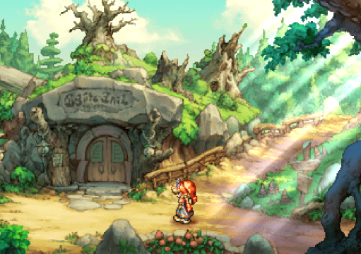
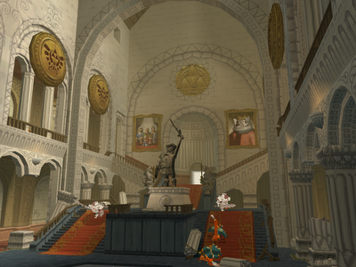
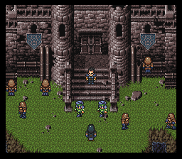
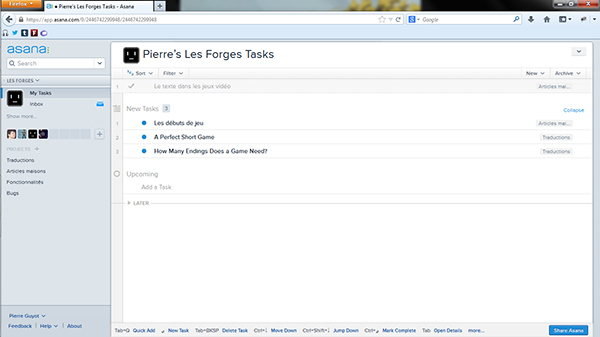
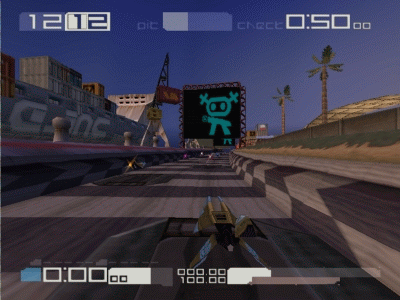
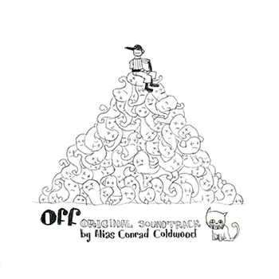

La direction artistique (deuxième partie)
Maintenant que nous avons vu pourquoi il peut être intéressant de réfléchir et de travailler à la direction artistique aussi tôt que possible, concentrons nous sur les moyens à notre disposition.

Quels sont les éléments sur lesquels travailler ?
Avant de se lancer dans un projet, il faut définir les contraintes techniques (résolution, 2D ou 3D, nombre de sprites à l'écran, etc.) et stylistiques (style, palettes, effets, filtres, etc.) qui vont gouverner le développement du jeu. Il est important de se poser ces questions aussi tôt que possible et à y répondre en tenant compte du gameplay et de l'univers du jeu : si vous souhaitez faire un visual novel comique, un style cartoon conviendra bien mieux qu'une 3D granuleuse.
Il est important de rester conscient de ses capacités et de dimensionner ses projets, de façon à pouvoir les finir. En général, on a toujours tendance à avoir les yeux plus gros que le ventre, surtout sur les premiers projets. Faire une liste des assets à réaliser peut aider à évaluer la taille du projet et éventuellement à faire des coupes avant qu'il ne soit trop tard. Il est important de « dégraisser » les graphismes du jeu autant que possible et de n'utiliser que les effets nécessaires : cela évite de s'éparpiller, préserve l'unité graphique du jeu et surtout évite du travail inutile.

Rappelons au passage qu'un « beau jeu » n'a rien à voir avec une technique complexe : la 2D colorée d'un Legend of Mana m'émoustille infiniment plus que les effets de particules grisâtres d'un Crysis. Plus précisément, la technique doit être mise au service du gameplay et de l'ambiance, et non l'inverse. La série des Zelda illustre très bien cette idée : Wind Waker vieillit infiniment mieux que son prédécesseur Ocarina of Time, non pas parce qu'il est plus récent, mais parce qu'il utilise mieux la technique : le style plus réaliste et plus sombre de l'épisode Nintendo 64 dépend plus lourdement du rendu et de la résolution des textures, un point sur lequel les jeux ont beaucoup progressé depuis 1998, alors que les à-plats cell-shadés de l'épisode GameCube sont intemporels.
Parlons maintenant un peu plus en détail de quelques points essentiels dans la direction artistique d'un jeu, qu'il s'agisse d'un MMORPG full 3D avec shaders et modèles Zbrushés ou d'un RPG simili-NES ultra oldschool en 8 couleurs.
La lisibilité.
Pour que le joueur puisse s'y retrouver vite et que le jeu soit agréable à l’œil, il est essentiel que l'écran et plus particulièrement les interfaces soient lisibles. Il faut limiter les éléments à l'essentiel, simplifier au maximum (n'oubliez pas : "less is more"), ajuster les couleurs pour obtenir un bon contraste, utiliser les détails à bon escient pour mettre en valeur certains aspects du jeu et jamais gratuitement (rappelez-vous, ça vous évitera du travail inutile). Si c'est peut-être moins essentiel pour les décors ou les personnages, c'est absolument central pour les menus et les interfaces.
Une astuce, pour juger de la lisibilité d'une image est de la passer en noir et blanc. On peut aussi utiliser les niveaux automatiques proposés par les logiciels de graphisme (Ctrl+Maj+L sous Photoshop, par exemple). Ces deux méthodes sont radicales, très simples et permettent de retrouver un œil neuf sur des graphismes sur lesquels ont a passé beaucoup de temps.
L'homogénéité et la cohérence.
L'ensemble du jeu doit être visuellement cohérent, pour que le joueur n'ai pas l'impression d'un patchwork. Produire trop d'éléments disparates ou essayer d'embrasser trop de thématiques différentes, c'est risquer de créer de l'incohérence, sans compter le travail supplémentaire que cela nécessite. Dans l'ensemble, n'hésitez par à vous limiter, surtout sur vos premiers projets : la contrainte peut être un excellent moyen de stimuler la créativité. Définissez de grands thèmes, forts et pas trop nombreux : le directeur artistique d'un jeu aussi vaste que Dark Souls résume par exemple la direction du jeu en seulement trois points.
Le son.
Je prendrai ici un instant pour m'arrêter et m'excuser auprès des compositeurs et des musiciens qui créent des jeux. J'ai bien écrit plus haut que direction artistique concernait les aspects graphiques et sonores d'un jeu et c'est simplement pour alléger le texte que je n'ai parlé que des graphistes (et puis aussi parce que je fais partie de cette engeance répugnante). Je précise donc : la musique, les bruitages (et les voix, s'il y en a) font partie intégrante de la direction artistique. Les aspects visuels et sonores d'un jeu devraient être pensés ensemble.
Les jeux Cavia (Nier, Drakengard 1, 2 et 3) constituent un exemple particulièrement intéressant : la technique de ces jeux est catastrophique (je pensais que Drakengard 2 était le jeu le plus laid que j'avais jamais vu… jusqu'à ce que je vois le trailer du troisième volet) mais leur ambiance est excellente grâce au travail effectué sur le son. On a l'impression que les développeurs ont fait passer la quasi-totalité de leur budget graphisme dans la musique et le doublage. Les bandes-son des Drakengard évoquent à merveille leur ambiance apocalyptique, tout particulièrement le premier volet dont l'OST, qui rappelle le Sacre du Printemps, est constituée de fragments de musique classique joués par un orchestre et réarrangés comme des samples d'électro. Nier, quant à lui, non content de proposer une bande-son acclamée par la critique et par les joueurs comme la meilleure de ces dernières années, s'ouvre une séquence doublée incroyable.
L'efficacité de la narration.
Les choix visuels doivent permettre une narration efficace. Les développeurs d'un visual novel par exemple, n'ont pas tellement intérêt à travailler sur une 3D animée ou des cinématiques. En revanche, il est nécessaire qu'ils s'attardent tout particulièrement sur le design et l'expressivité des personnages.

Dans Final Fantasy VI, les développeurs ont fait le choix d'utiliser des sprites SD, qui ne correspondent pas aux artworks d'origine réalisés par Yoshitaka Amano : si l'on perd en réalisme et en finesse (notamment avec les changements de couleur, beaucoup plus vives pour les sprites), on gagne énormément en lisibilité et en expressivité des personnages, ce qui permet de donner beaucoup de vie aux dialogues et de donner la mesure des (nombreux) changements de registre. C'est absolument essentiel pour ce jeu baroque dont une thématique centrale est la théâtralité.
Comment s'organiser ?
Parlons maintenant un peu des moyens d'organisation à notre disposition. Ce qui suit ne prétend pas être une présentation exhaustive des solutions d'organisation, juste un aperçu de quelques petites choses qui peuvent aider au développement d'un projet.
Travailler la direction artistique en amont, autant que possible. Comme je l'ai déjà mentionné plus haut, il est important de discuter le plus en amont possible du développement des problèmes de direction artistique. Le principe de la navette peut être un moyen d'avancer efficacement : les graphistes échangent un concept art sur lequel tout le monde apporte ces modifications. Quand on bosse à plusieurs, ce système a l'avantage de bien faire passer les idées (mieux que ne le ferait un pavé d'explications en tout cas).
Garder une trace des décisions prises et construire un dossier de références. Pour garder une trace objective des réunions et des discussions, il est important de poser les décisions prises sur le papier, même de façon très succincte, si possible sous la forme de concept arts, qui sont plus parlants que du texte. Ces traces papier pourront servir de référence pour la suite : par exemple, un concept art de lieu sur lequel tout le monde s'est mis d'accord pourra servir de référence pour l'ambiance et guider les graphistes pour les monstres et les PNJ qui l'habitent. Il peut être utile de constituer une base d'images (et éventuellement de musiques) de référence. Ce fichier d'images doit cependant rester d'une taille raisonnable : on ne peut pas constituer un dossier de 1000 images pour un microdécor.
Définir rapidement les outils utilisés pour créer le jeu. Il faut choisir les outils utilisés pour créer le jeu en fonction des différentes contraintes techniques : Photoshop, Tiled, RPG Maker, moteur maison, etc. Par exemple, est-ce que cela vaut le coup de créer un moteur maison si un moteur disponible vous fournit déjà les fonctionnalités dont vous avez besoin ? Est-ce que les gens de l'équipe savent déjà utiliser ce logiciel et si non, est-ce que le temps d'apprentissage est suffisamment raisonnable pour que ça vaille le coup ? Est-ce que j'ai besoin d'un logiciel très puissant mais généraliste ou est-ce que je ne peux pas trouver un logiciel plus spécifique à mon problème ? Parmi ces problèmes d'outils, pensez aussi à faire attention à la question des couleurs et assurez-vous de tester vos palettes sur plusieurs écrans, le rendu pouvant varier drastiquement de l'un à l'autre.

Définir rapidement les outils utilisés pour communiquer au sein de l'équipe. Pour mettre en commun les ressources, un certain nombre de choses sont disponibles : Asana, SVN, Dropbox, Googledocs, Picasa, etc. Pour Lije par exemple, nous utilisons une Dropbox pour partager les fichiers de conception et nous organisons une réunion de discussion une fois par semaine par Skype, à peu près à heure fixe. De cette façon, on maintient un rythme de travail régulier et chacun peut travailler en autonomie.
Utiliser des placeholders. Il n'est pas du tout évident de savoir de quels types de tiles on aura besoin lorsque le level design n'est pas encore fixé. Dans ce cas-là, il peut être utile de prototyper aussi « salement » que possible : plutôt que de produire directement des graphismes très finis qui ne seront pas forcément adaptés, le graphiste peut utiliser des placeholders très basiques qui, s'ils ne donnent pas forcément une idée du rendu final, permettent de travailler le level design et d'établir une liste des éléments dont on aura vraiment besoin par la suite. Le graphiste pourra alors se lancer dans la réalisation des éléments visuels, sans craindre de se planter et d'avoir à tout recommencer.
Une dernière note enfin sur un problème que j'ai vu revenir souvent (et dont je suis moi-même couapble) : le perfectionnisme. Comme on progresse au fur et à mesure du développement, on est souvent tenté de recommencer depuis le début ou de passer du temps à refaire les « vieilles » ressources. Ca part d'une intention louable, mais il est plus important d'avancer que de repasser sur l'ancien et, à moins d'être très organisé et d'avoir une volonté de fer, on risque de se perdre dans ces « dépoussiérages » (la seule personne que je connaisse à vraiment s'y tenir s'appelle Sylvain Dolisi, allez voir son projet, parce que c'est cool). Il faut fixer un « standard » de qualité, à la fois à atteindre et à ne pas dépasser, parce que chercher à faire mieux prendrait trop de temps. Il peut être intéressant de participer à des concours, des festivals ou de s'imposer à soi-même des délais à respecter : utiliser les deadlines est un moyen de se forcer à finir plutôt que de repasser sur ce qui a déjà été fait, car il est en fin de compte plus important de proposer un jeu imparfait mais fini que pas de jeu du tout. Des réunions de discussion régulières peuvent par exemple faire office de micro-deadlines.
Quelques exemples remarquables.
Pour conclure cet article sur une note moins technique et plus fun, voici quelques exemples de directions artistiques (parmi tant d'autres) qui se démarquent particulièrement par leur sens de l'économie.

La série de jeux de courses futuristes WipEout bénéficie d'une direction artistique très forte et cohérente entre les épisodes. Les grandes lignes, définies par feu The Designers Republic, sont d'utiliser des palettes ultras contrastées (Jaune + Noir, Rouge + Jaune, Rose + Blanc + Cyan, etc.), des formes géométriques et de surcharger le tout d’icônes et symboles (notamment des caractères japonais). Les lignes géométriques et les palettes (et la musique techno) donnent au jeu son aspect futuriste tandis que le déluge d'information et symboles font naître un univers qui parodie la société de consommation, le monde de la publicité et un peu Hello Kitty. Si le sujet vous intéresse, vous pouvez jeter un œil aux articles de Visual Attack Formation sur le sujet ou au podcast Je Game Moi Non Plus sur la série.

Off est un jeu amateur français développé sous RPG Maker. Avec un minimum de moyen visuels, l'auteur a su créer un jeu à l'identité visuelle unique et très marquante, en jonglant entre pixel art minimaliste, sérigraphie, affiches et planches encyclopédiques du XIXème. Derrière sa simplicité apparente, le chara design est extrêmement efficace et d'une originalité rare, alors MANGEZ-EN !
Et là j'aurais bien voulu vous harceler encore un peu avec Final Fantasy XIII, mais mon éditeur me dit que c'est pas possible. C'est pourquoi je conclurai cet article en mentionnant Persona 4 (et même les jeux de la série Shin Megami Tensei de façon générale) pour son design unique (voire tordu) et surtout, l'économie de moyens avec laquelle les développeurs ont réussi à le communiquer. Bien évidemment, nous n'avons traité ici qu'un petit nombre d'exemples et bien d'autres mériteraient d'être mentionnés : n'hésitez pas à nous faire part de vos suggestions dans les commentaires !
Ajouter un commentaire
Commentaires

Je m'y retrouve un peu dans cet article parce que j'ai récemment quitter un projet où j'étais mappeur.
A cause de mon inexpérience et celle des fondateurs, nous avons procédés sans concept art, mais avec des modèle (officie de placeholders) qu'on m'a demander de sublimer. N'ayant aucun support réel sur lequel me baser, j'ai joué au clairvoyant et je le regrette.
Je n'ai donc pas eu cette chance là : " Le graphiste pourra alors se lancer dans la réalisation des éléments de graphiste, sans craindre de se planter et d'avoir à tout recommencer."
Bref : si ça vous intéresse, voici le résumé de mon histoire > http://blogofchaos17.wordpress.com/2013/11/14/les-peripeties-dun-noob-epilogue/

J'aime beaucoup ton article. J'ai moi même découvert tout les avantages de la direction artistique à force de galère professionnelle.